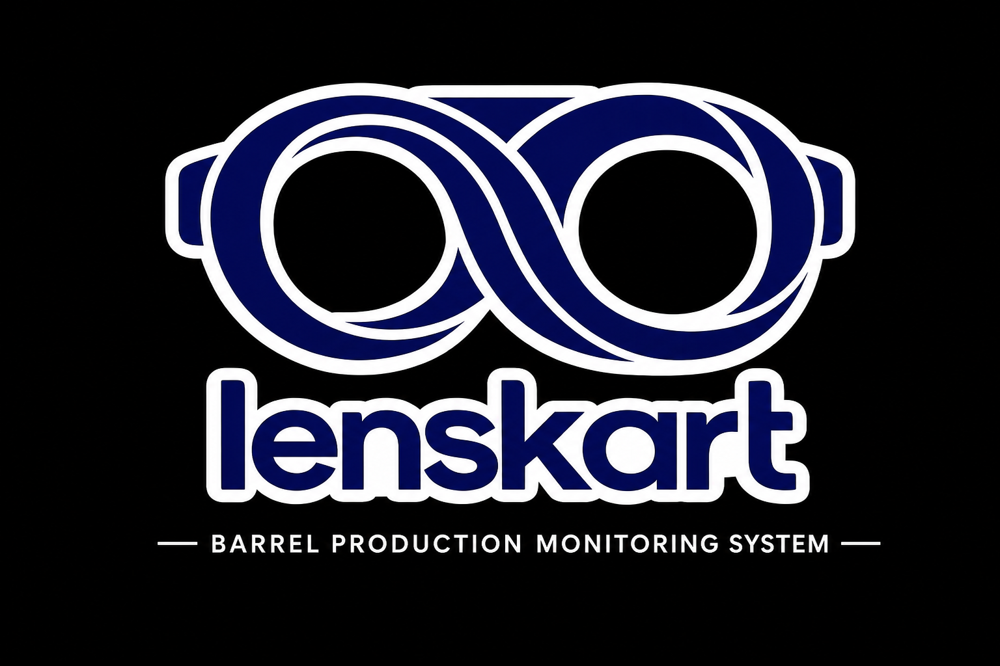

Barrel Production Monitoring System
B_Looker is a smart production monitoring solution developed for barrel manufacturing. It enables QR-based production tracking, chamber monitoring, rescan detection, and live dashboard reporting using Google Workspace technologies.
Production Monitoring System for Barrel Manufacturing.
HTML, CSS, JavaScript, Google Apps Script, Google Sheets, GitHub Pages.
QR Scanning, Live Dashboard, Chamber Tracking, Rescan Detection, WIP Monitoring.
Developed by Arju Kumar
Version 1.0.0
Hosted on GitHub Pages with Google Apps Script backend.